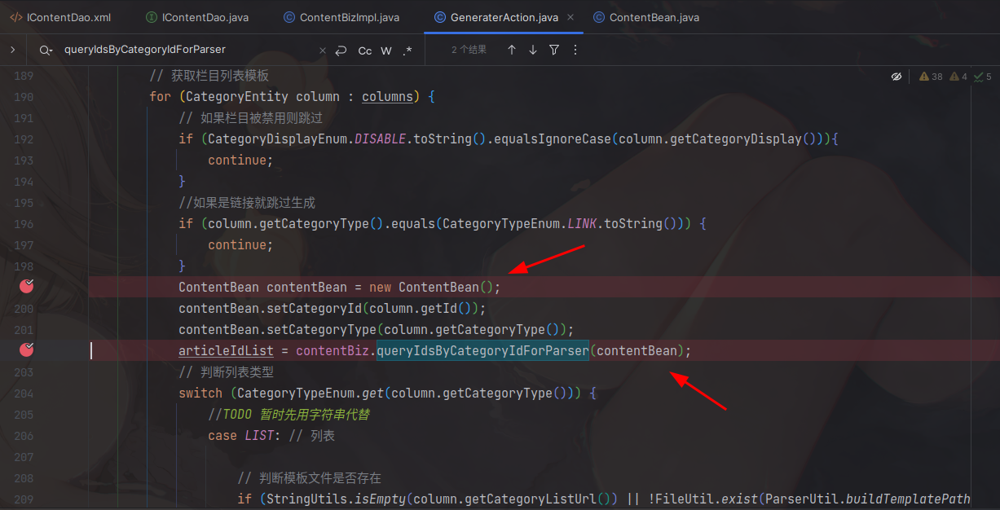
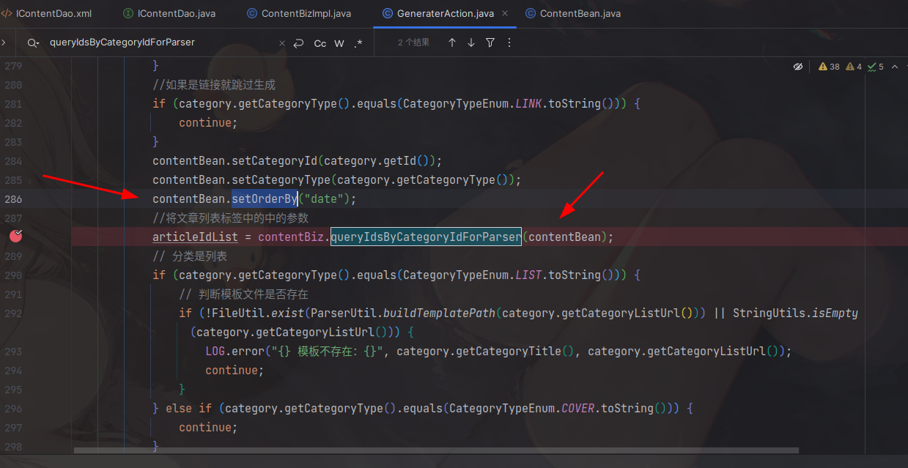

环境搭建
gitub：https://github.com/ming-soft/mcms
gitee：https://gitee.com/mingSoft/MCMS
环境
IDEA 2023.2
java 1.8.151 openjdk
ubuntu 22.04
mysql 5.7.31
系统版本：5.3.5
搭建
官方很贴心，直接照着readme.md文档的快速体验配置，加载完pom.xml文件后选择MSApplicaion.java,点击右上角运行即可。
系统结构
从github上把项目下载解压后就发现有点不对劲，这样一个系统，也不算小，src中代码只有这么一点，怎么想都不对劲。

但是把pom.xml文件都下载好后运行又一切正常。花了一点时间研究了一下。才发现这个系统把几乎所有的功能都打包成jar文件，写在pom文件中，由maven导入系统中了。


所以下断点需要在这些文件中，另外一方面，由于系统使用的mybatis，由于这种特殊的结构，我没找到系统的resources/mapper/xxxxMapper.xml文件，又是经过一段时间，我发现这些xml文件，居然tmd直接就在dao目录下

提取这些源代码可以在idea中点进jar文件中的代码文件，然后点击编辑框上面的下载源代码下载xxxx-source.jar文件。用xxxx-source.jar文件反编译的代码是有注释的，xxxx.jar没有。对比如图：


把所有6个jar文件都解压到项目目录中，现在ideal查询就能查到xml文件中的内容了。

防御
在 /net/mingsoft/ms-base/2.1.25/ms-base-2.1.25-sources.jar!/net/mingsoft/base/util/SqlInjectionUtil.java 中存在sql注入的过滤函数

在/net/mingsoft/ms-basic/2.1.25/ms-basic-2.1.25.jar!/net/mingsoft/basic/filter中有一系列防御函数


SQL注入
IContentDao.xml
在IContentDao.xml中有6处${ ，如图：

一个一个来看。
前面两个${order}不行，两个order都跳到了queryIdsByCategoryIdForParser方法中，入参为contentBean，第一个contentBean没有setorder，第二个设置了，但是写死了


queryIdsByCategoryIdForParser
在最后的order，往回找IContentDao.java，有queryIdsByCategoryIdForParser函数，继续往回找，跳到ContentBizImpl.java中，也有queryIdsByCategoryIdForParser。有两个使用。在GeneraterAction.java文件中。一个是生成栏目接口，”/{categoryId}/generateColumn”，一个是生成文章接口，”/{columnId}/generateArticle”。


由于注入需要order参数，两个函数的调用，传入的contentean都没有set order参数。无法利用
queryIdsByCategoryIdForParserAndNotCover
在最后的order，往回找IContentDao.java，有queryIdsByCategoryIdForParserAndNotCover函数。继续往回找，跳到ContentBizImpl.java中，也有queryIdsByCategoryIdForParserAndNotCover，但是就到此为止了。这个函数没有在别的地方用过。

getSearchCount
1 |
|
同样的方法，找到ContentBizImpl.java文件中的getSearchCount函数。

然后是MCmsAction.java文件，

传入四个参数，三个都有${一个一个来，
- contentModel
1 | contentModel = (ModelEntity) modelBiz.getById(column.getMdiyModelId()); |
- fieldValueList
- categoryIds
这个参数比较简单，直接在post的body加上categoryIds=123就过来了。但是由于系统有全局过滤，所以需要考虑绕过过滤的问题。